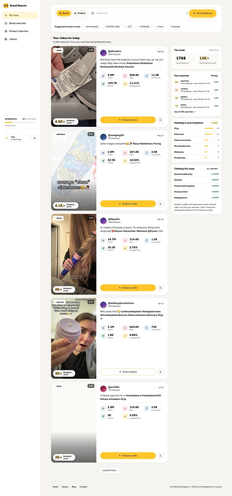
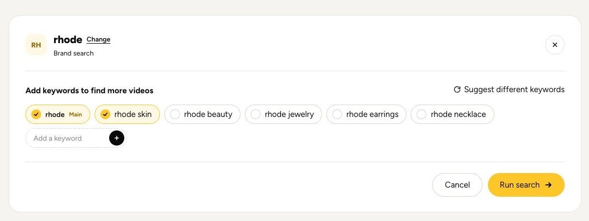
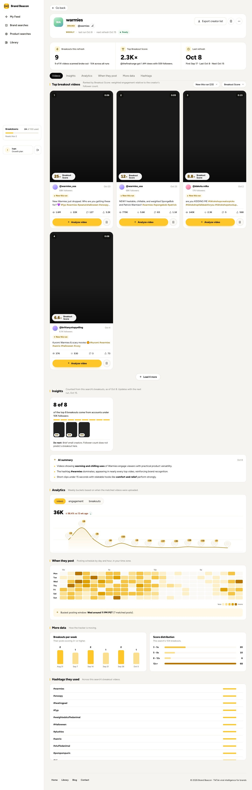
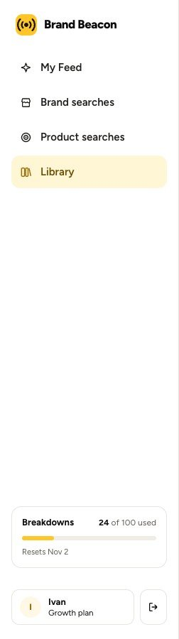
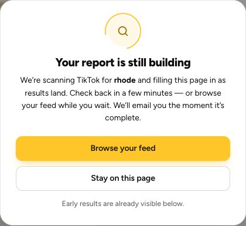
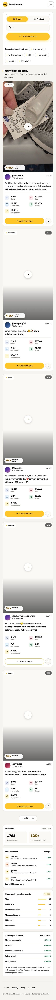

BrandBeacon 3.0 mockups
Left: the live app on 11 Oct. Right: the 3.0 design, updated 13 Oct with Ivan's 11 Oct notes. Everything matches live except what Ivan asked for. Each note is tagged with its source; the 11 Oct changes are in yellow.
The designs are clickable. Press Scroll inside on any screen to scroll it like the real app, or open it full size. Numbers come from the real rhode skin run (18 Sep) unless marked SAMPLE.
1One search for brands and products
Brand / Product toggle, then Find breakouts

- 1IVAN 6 OctNo Brand / Product toggle. One box: Search a brand, product or keyword. "having one search. No picking, you just put the keyword."
- 2LIVEIf the term matches a TikTok account, it shows first in the dropdown.
- 3LIVEFind breakouts still opens the keyword step (row 2).
- 4IVAN 6 OctBrands, Products and Hashtags rows under the search. "suggest brands, suggest products, suggest hashtags, maybe." A hashtag runs as its keyword, since search is keywords only (Ivan, 30 Sep).
A matching account opens as its brand card, with the keyword breakouts underneath. One search credit.
2Smarter keyword suggestions (dev note)
rhode still suggests rhode jewelry, earrings and necklace

- 1LIVESame panel as live: Add keywords, Suggest different keywords, Add a keyword, Cancel, Run search.
- 2IVAN 6 OctKeywords read the term. rhode gets lip tint, peptide lip treatment and glazing milk, not jewelry. "takes the current keyword and it reads it and then suggests keywords based on it."
- 3IVAN 6 OctSimilar brands row. "here's a hot sauce keyword, give me all the hot sauce brands."
- 4IVAN 11 OctMoved to the dev notes. "this should be in the dev notes?"
For Lester: Brand or account term: suggest its own product lines and drop matches that only share the word (rhode skin keeps lip tint and glazing milk, drops rhode jewelry). Product or category term: suggest close variants and synonyms, plus Similar brands, the brands that appear most in breakouts for that category. Build the list from the term plus the captions and hashtags of the top TikTok results, up to 6 keywords and 4 brands, with the 2 strongest ticked. Suggest different keywords reruns it without the ones already shown. Hashtag suggestions stay on Home (row 1).
3Results page, simplified
Breakouts this refresh, Top Breakout Score, Last refresh

- 1IVAN 11 OctLess on the page. "seems a little crowded - simplify or new layout? this includes the insights." Type, handle and run dates sit on one line; save moves into the more menu.
- 2IVAN 6 OctAlert me on each search. "having notifications on each other keyword." Growth and Scale, as on live pricing; Free sees an upgrade prompt.
- 3IVAN 11 OctThree numbers, no boxes: breakouts this run, Top Breakout Score, Average Breakout Score (Ivan, 6 Oct). Average is a sample. Top and average views move to the Analytics tab.
- 4IVAN 9 OctOne line under the numbers defines Breakout Score against the creator's average video, never followers.
- 5IVAN 11 OctInsights cut to one line with More insights; the full set is its own tab.
- 6LIVETabs as live, plus Insights. New this run folds into Sort.
- 7IVAN 30 SepCards as live, with Share next to Analyze and save.
- 8LIVEAI summary, Analytics, When they post, More data and Hashtags: unchanged.
- 1IVAN 6 OctPRODUCT with the keywords this search ran, where a brand shows its handle. "when you do a product search ... how can we present this better?"
- 2IVAN 11 OctBrands in these breakouts takes the insight line, each linking to its brand page. Counts are samples.
- 3LIVESame numbers, tabs and cards as a brand search.
Three quiet numbers, one line of insight, then the videos. Average Breakout Score, the Breakout Score definition, Alert me and Share all stay.
4Left sidebar
My Feed, Brand searches, Product searches, Library, Breakdowns

- 1IVAN 11 OctMy Feed sits directly under Home. "add my feed, under home."
- 2IVAN 11 OctProcessing shows only while something runs: searches and video analyses, each with a progress bar, then a toast when ready. "or maybe a 'processing' section."
- 3IVAN 11 OctRecent searches replaces Saved searches: the last 5, then See more (opens Search history). "have up to 5 and 'see more'."
- 4IVAN 11 OctMy Library replaces Your work: Saved videos and Video analyses. "change 'your work' to 'My Library'."
- 5IVAN 11 OctRows are tighter but the gaps between groups stay. "i like the white space, try to keep that."
- 6IVAN 11 OctSearches and Breakdowns are two thin lines; plan and reset date move under the name. "make searches and breakdowns more compact."
Recent searches, Processing only while something runs, My Library, and a smaller usage meter, with the same spacing between groups.
5Home: your searches plus new breakouts, My Feed in the left bar
One column feed with This week, Your searches, Hashtags and Climbing
- 1IVAN 11 OctMy Feed is a left-bar item, under Home. "lets add my feed."
- 2IVAN 6 OctYour searches stays a plain list. "I think we should just have search terms."
- 3IVAN 11 OctNew in your searches: one row of the four newest breakouts, with See all in My Feed. "more than just 'your searches'... not too much ... maybe a select breakout videos?"
- 1LIVESame as live: one column of cards with This week, Your searches, Hashtags and Climbing beside it.
Home is Your searches plus one row of four new breakouts. The A and B layouts from 11 Oct are retired.
6Onboarding checklist
- 1IVAN 11 OctAll four steps sit in the left column. No popout. "can the 4 fit in the left column, instead of a popout."
- 2IVAN 6 OctRun a search, analyze a video, save a video, run a second search. "do your first brand search, do your first analysis, do your first whatever."
- 3OURSSteps tick as they happen. The block goes away once all four are done, so paid accounts never see it.
Free includes 3 searches and 5 video analyses (agreed on Slack), so every new account can finish all four steps.
7First search journey: where BB drops people after Run search
A loading page with nothing to do while the report builds

- 1IVAN 11 OctThe first search. "let's go with 'wait and learn'." Three steps say what is happening.
- 2OURSEmail me when it is ready is on by default and says they can leave.
- 3OURSA How to read your results video, so the Breakout Score makes sense when results land.
- 4IVAN 10 OctThen breakouts other searches found this week. "see other breakouts."
- 5IVAN 11 OctThe sidebar shows it under Processing, with Get started open.
- 1IVAN 8 OctRun search lands on Home with a slim running bar. "let's put them somewhere else so that they know that it's coming."
- 2IVAN 11 OctEvery search after the first. By then people know what a breakout is, so they can keep browsing.
- 12 breakouts so far. Still checking 140 of 200 videos.
- 2DEVNo empty wait. Depends on scoring videos one at a time (Lester).
- 1All three keep the search in the sidebar, email when it is ready, and end here.
- 2Thumbnails reuse the rhode skin run; "usually 1 to 2 minutes" is from the 22 Sep test.
A for the first search, B for every search after it. C replaces both once the speed work lands.
8Mobile
Toggle, search, then a long feed; Your searches sits at the very bottom

- 1IVAN 11 OctParked. "let's work on this after desktop for now."
- 1IVAN 11 OctParked with the rest of mobile.
Parked: Until the desktop screens are approved.
9First search complete email

- 1Trigger: the first search completes. Once per account. Skipped if they already opened the results.
- 2Subject: "Your {{search_term}} breakouts are ready". Preview: "{{breakout_count}} TikTok videos beat their creator's usual views."
- 3One picture (the top video's still), one button, signed by Ivan.
- 4Replaces B1 Results ready, written for someone who left. Searches-left line dropped.
- 5DEVsearch_completed (first one); merge tags first_name, search_term, breakout_count, top_score, top_video_thumb, results_url. 14 and 8.6K× are samples.
Sent once, after the first search only. If B1 is already live, this is a copy change only.